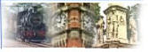

|
This page is africaclubhistory.org
|
|
This
section of The "History" Website is dedicated to the first 11 clubs of
Africa
Please note: this project was begun 14 September 2001. You may select "Join" at the top of the page for more information.
Information in "Green" is historical data from the
Rotary International Archives Department 1928 official directory. (number)
is the club's original entry number into RI.
Jonathan B. Majiyagbe, first RIP from Africa 2003-2004 our pre-centennial
president
Also see our
regional history section |
|
|
| |
|
#01
Johannesburg, Union of South Africa
1 Jul 1921 (club #976)
D9300 ZONE10
HISTORY |
#02
Durban, Union of South Africa April
1924 (1893)
D9270 ZONE10 HISTORY |
| |
|
#03
Port Elizabeth, Union of South Africa
February 1925 (2004)
D9320
ZONE10 HISTORY |
#04
Cape Town, Union of South Africa February
1925 (2011)
D9350
ZONE10 HISTORY
|
| |
|
#05
Pietermaritzburg, Union of South Africa March 1925 (2072)
D9270
ZONE10 HISTORY
 |
#06*
Pretoria, Union of South Africa February 1925 (2106)
D9250 ZONE10
HISTORY
*#6 according to RI charter #3 organized in Africa |
| |
|
#07
East London, Union of South
Africa February 1926 (2317)
D9320
ZONE10 HISTORY |
#08
Bloemfontein, Union of South
Africa August 1926 (2463)
D9320
ZONE10 HISTORY |
| |
|
(#09) Elisabethville,
Belgian Congo March, 1927 (2585) D ZONE10
*HISTORY (*Club no longer
listed) |
#09 Queenstown,
Union of South Africa August 1927 (2683)
D9320
ZONE10 HISTORY |
| |
|
#10
Benoni, Union of South Africa
November 1927 (2842)
D9300
ZONE10 HISTORY
|
|
| |
|
*Dear RotaryAfrica.org,
Yes, there has indeed been a change of name,
both of the town and the country. Elisabethville became Lubumbashi, and the
Belgian Congo became Zaire and is now the Democratic Republic of the Congo.
It is within District 9150. However, the current Official Directory shows
that the Rotary Club of Lubumbashi was admitted to RI only in 1955. This
probably means that the original Rotary club in this town was terminated,
but that Rotary was re-introduced with the formation of a new club there.
My colleague Abdé Benothman is currently
assigned to this district, and I am copying this message to him in case he
has anything to add to the information above.
Yours sincerely,
Graham Reoch
Club & District Administration, Europe/Africa Office, RI
|
|
|